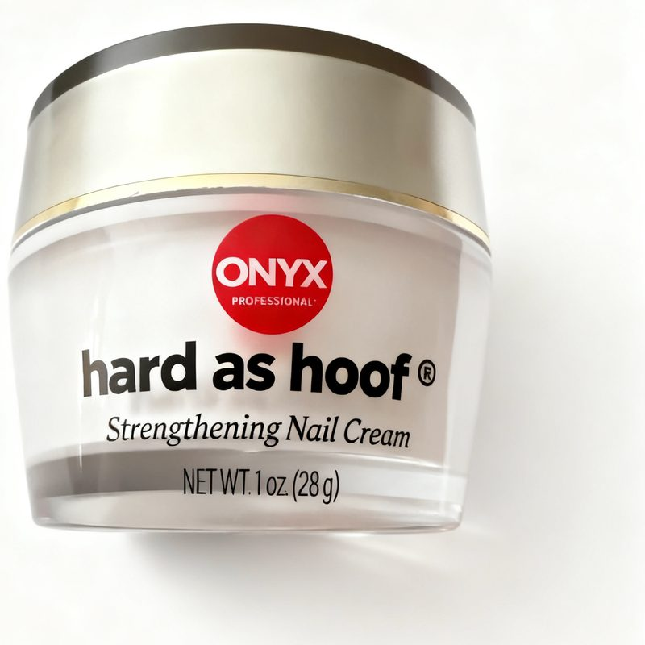

Things I actually use.
This is not a store. It is the running list of things I recommend to my sisters, my friends, and anyone who stands in my kitchen long enough. If it made this page, I use it and I like it. And every dollar this page earns goes to my daughter, a missionary in Cambodia.
What I am loving this month

Hard as Hoof Nail Strengthening Cream
My sisters recommended this first. Then my chamber girls started talking about it too, completely on their own. When two different circles of women I trust rave about the same little jar, I pay attention. I have been using it, and now I am the one recommending it.
See it on AmazonWindow Hummingbird Feeder
This feeder suction-cups right onto the glass, so the hummingbirds come to you. There is something about a hummingbird hovering a foot away while you stand there with your coffee that makes the whole morning slow down. Leak proof, bee proof, and you can refill it without taking it off the window.
See it on AmazonBeard Bib
I got this for Dan and honestly expected it to end up in a drawer. He surprised me. He uses it every single time. It clips to the mirror and catches all the beard trimmings, which means the sink stays clean and nobody has to have the sink conversation. A great gift for the man in your life.
See it on AmazonTickTalk 5 Kids Smart Watch
We don't do real technology for our kids, and this is the middle ground that works for us. My 11 year old can call and text us, I can see where they are, and there is an SOS button. No internet, no social media, no endless apps. It gives them a little independence and gives me peace of mind.
See it on AmazonOGHom Handheld Travel Steamer
A little steamer and iron in one that heats up in 30 seconds. Wrinkles come out of a dress faster than you can find the hotel iron, which is usually broken anyway. It packs small enough that there is no excuse to leave it home.
See it on AmazonThese are affiliate links, and every dollar they earn supports my daughter's missionary work in Cambodia. It costs you nothing extra. As an Amazon Associate I earn from qualifying purchases.